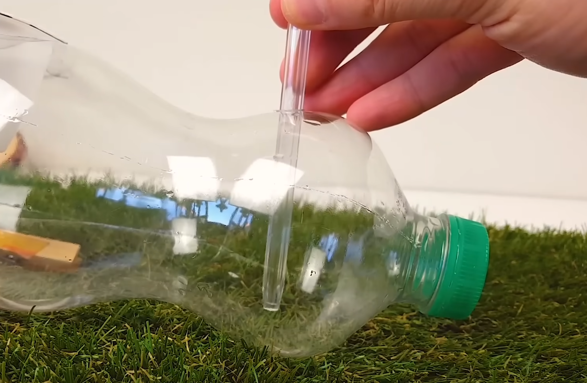
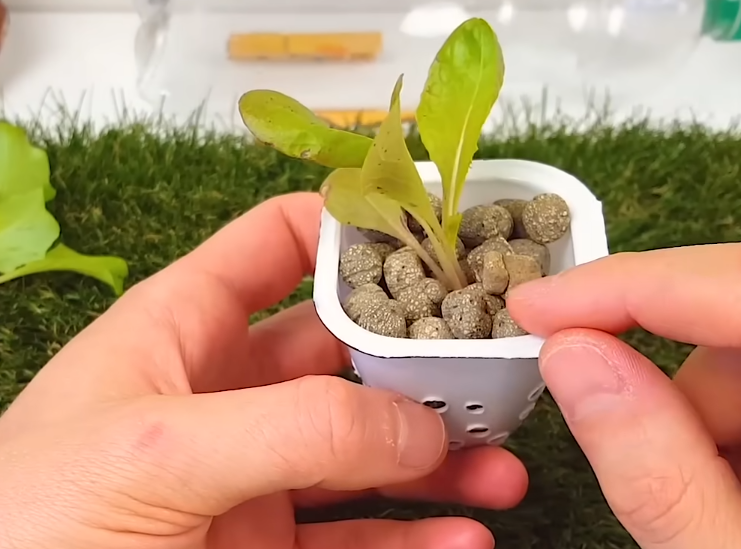
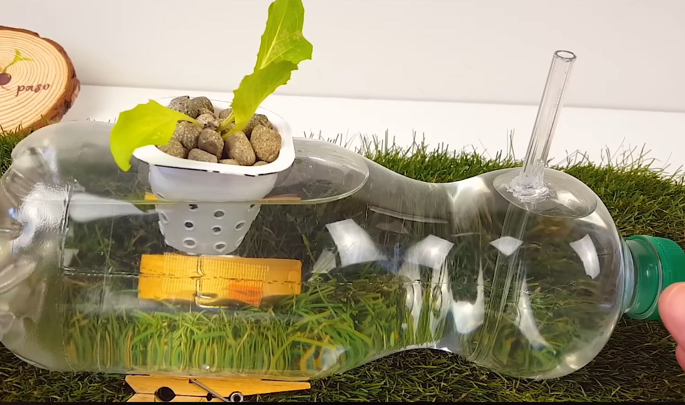
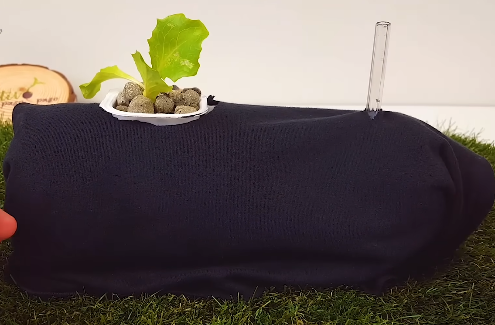
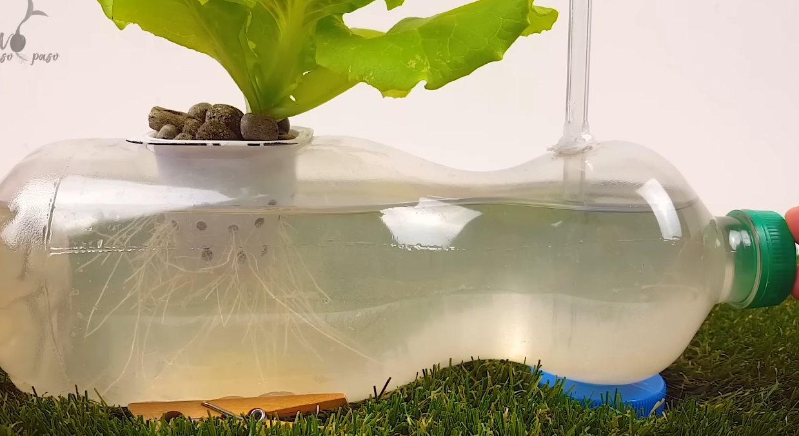
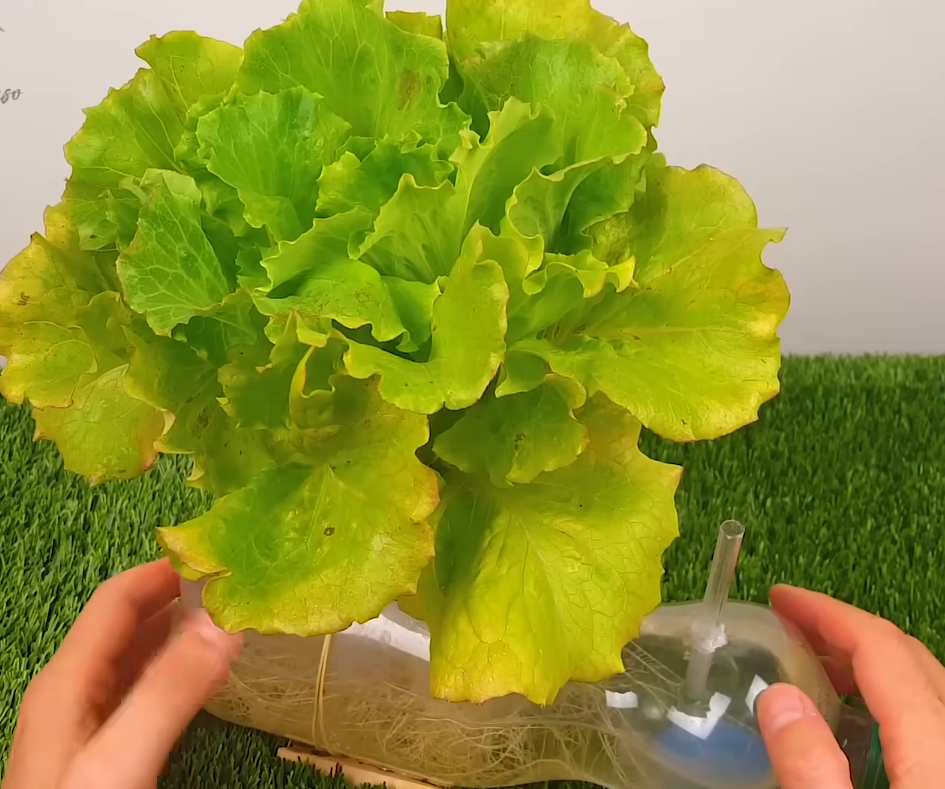

Paso a paso: Cómo hacer tu cultivo hidropónico
PASO 1
Con ayuda del cautín o unas tijeras, perfora un orificio para colocar el recipiente pequeño.

PASO 2
Pega los ganchos para evitar que el cultivo gire.

PASO 3
Inserta un tubo (como un lapicero sin mina) para oxigenar el agua.
PASO 4
Haz pequeños agujeros de 3 a 4 mm en el recipiente pequeño para permitir el paso del agua.

PASO 5
Llena el recipiente con arcilla expandida e introduce el brote de lechuga con raíces limpias.
PASO 6
Agrega agua y abono líquido a la botella grande.
PASO 7
Cubre el cultivo con el trapo negro y colócalo al sol.
PASO 8
Cambia el agua con abono cada 20 días.
PASO FINAL
Después de 40 días, podrás cosechar y disfrutar tu cultivo hidropónico casero.
Visita nuestra tienda
Encuentra materiales e insumos para tus cultivos hidropónicos:

Abono Líquido
Ideal para nutrir tus plantas hidropónicas.

Arcilla Expandida
Proporciona soporte y aireación para las raíces.

Trapo Negro
Protege tus cultivos de la luz directa y mantiene la humedad.